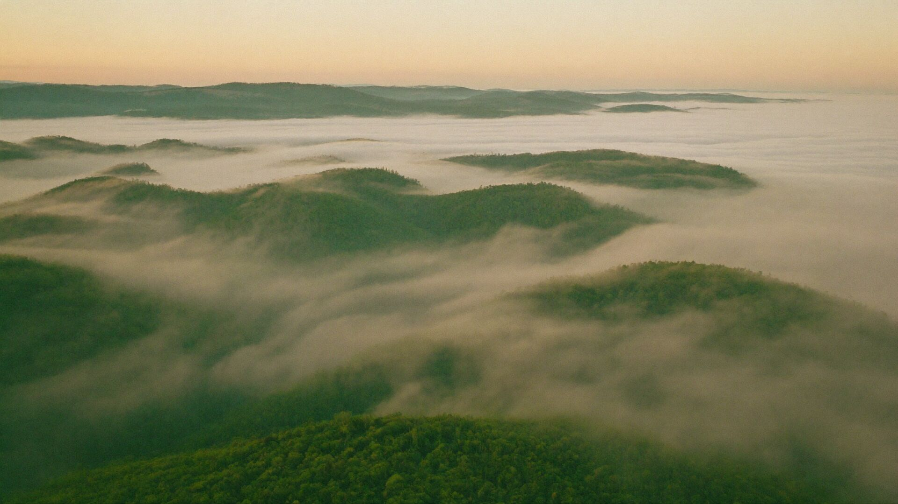
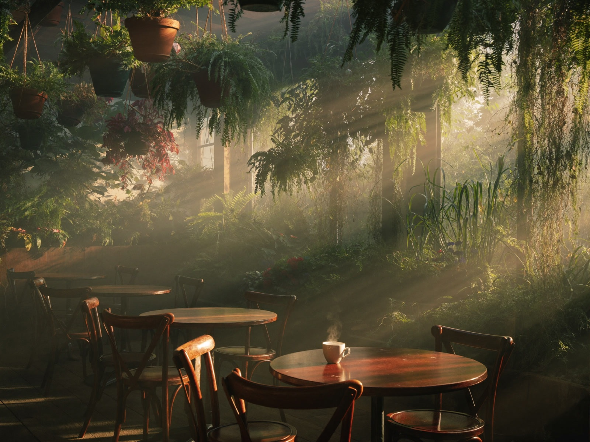

Guía de Monteverde
Qué hacer en Monteverde cuando llueve
Se llama bosque nuboso por algo. La lluvia aquí no es mala suerte, es la gracia; así se disfrutan los días mojados en vez de esperarlos en el cuarto del hotel.
¿Cuándo llueve en Monteverde?

La época lluviosa va más o menos de mayo a noviembre, con las tardes más fuertes en setiembre y octubre. De diciembre a abril es más seco pero con viento, con neblina que atraviesa los árboles de lado, lo que aquí se llama pelo de gato.
Casi todos los días, incluso en época lluviosa, la mañana está despejada y la lluvia llega después del almuerzo. Planee el bosque para la mañana y la cafetería, las tiendas y los museos para la tarde.
¿Vale la pena caminar la reserva con lluvia?
Sí. Los senderos están bien cuidados y el dosel detiene casi toda el agua. El bosque está en su punto más verde, las ranas salen y la gente no. Lleve capa de lluvia y zapatos cerrados, guarde el teléfono en una bolsa y camine despacio. La lluvia casi siempre se vuelve neblina en una hora.
Qué sigue abierto y bajo techo
Los puentes colgantes y el canopy funcionan con lluvia a menos que haya rayos. Los jardines de mariposas y colibríes, el ranario, la jungla de murciélagos y el jardín de orquídeas están casi todos cubiertos. Un tour de café o de chocolate pasa buena parte del tiempo bajo techo, así que una tarde lluviosa es buen momento para uno.
A lo tico: esperar con algo caliente

Los costarricenses no pelean con la lluvia, la esperan con un cafecito. Nuestras mesas están bajo el jardín colgante, con la lluvia sobre las hojas alrededor. Pida un chocolate caliente costarricense, un Cloud Forest Latte con miel y canela, o un Café con Leche con una empanada caliente, y dele cuarenta minutos. Casi siempre pasa.
A los niños, chocolate caliente. A los adultos que vienen de un puente frío, también el Tres Leches.
Qué ponerse en un día de lluvia
Una capa de lluvia de verdad, no sombrilla; el viento las vuelve inútiles. Pantalón de secado rápido, zapatos cerrados con agarre, y una muda seca en una bolsa para después. Una toalla pequeña es lo que nadie empaca y todos quieren.
Después de la lluvia
La hora después de un aguacero es la mejor hora de Monteverde: la luz entra baja bajo las nubes, los colibríes vuelven al jardín y el aire huele a bosque mojado y a café. Quédese para la segunda taza.